For the ART2 learning function ART2 there are various parameters to specify. Here is a list of all parameters known from the theory:
Vigilance parameter. (first parameter of the learning and update function).
is defined on the interval
For some reason, described in [Her92] only the following interval makes sense:
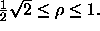
a Strength of the influence of the lower level in F
by the middle level. (second parameter of the learning and update function). Parameter a defines the importance of the expection of F
, propagated to F
:
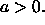
Normally a value of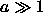
is chosen to assure quick stabilization in F.
b Strength of the influence of the middle level in F
by the upper level. (third parameter of the learning and update function). For parameter b things are similar to parameter a. A high value for b is even more important, because otherwise the network could become instable ([CG87b]).
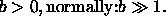
c Part of the length of vector p (units p
... p
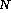
) used to compute the error. (fourth parameter of the learning and update function). Choose c within 0 < c < 1.d Output value of the F
winner unit. You won't have to pass d to ART2, because this parameter is already needed for initialization. So you have to enter the value, when initializing the network (see subsection on the initialization function). Choose d within 0 < d < 1. The parameters c and d are dependent on each other. For reasons of quick stabilization c should be chosen as follows:
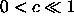
. On the other hand c and d have to fit the following condition: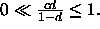
e Prevents from division by zero. Since this parameter does not help to solve essential problems, it is implemented as a fix value within the SNNS source code.
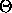
Kind of threshold. For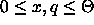
the activation values of the units x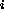
and qonly have small influence (if any) on the middle level of F
. The output function f of the units x
and q
takes
as its parameter. Since this noise function is continuously differentiable, it is called Out_ART2_Noise_ ContDiff in SNNS. Alternatively a piecewise linear output function may be used. In SNNS the name of this function is Out_ART2_Noise_PLin. Choose
within
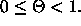
To train an ART2 network, make sure, you have chosen the learning
function ART2. As a first step initialize the network with the
initialization function ART2_Weights described above. Then set
the five parameters  , a, b, c and
, a, b, c and  , in the
parameter windows 1 to 5 in both the LEARN and UPDATE
lines of the control panel. Example values are 0.9, 10.0, 10.0, 0.1, and
0.0. Then select the number of learning cycles, and finally use the buttons
, in the
parameter windows 1 to 5 in both the LEARN and UPDATE
lines of the control panel. Example values are 0.9, 10.0, 10.0, 0.1, and
0.0. Then select the number of learning cycles, and finally use the buttons
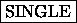
and to train a single pattern or all patterns
at a time, respectively.
to train a single pattern or all patterns
at a time, respectively.